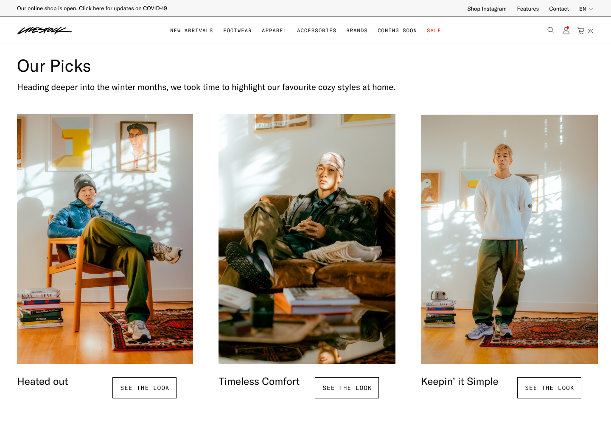

Final Solution
Our final product is a seasonally recurring Interactive Lookbook accessible through their website. The Lookbook features fit collections of the season and the behind each product. We implemented a horizontal scrolling site create an experience akin to reading through a book, allowing LIVESTOCK to stand out competitors.
The layout of the website is very simple, but still uses strong images to lead the eyes through the page. We aim to encourage customers from clicking on the product to learn more and potentially purchase them.